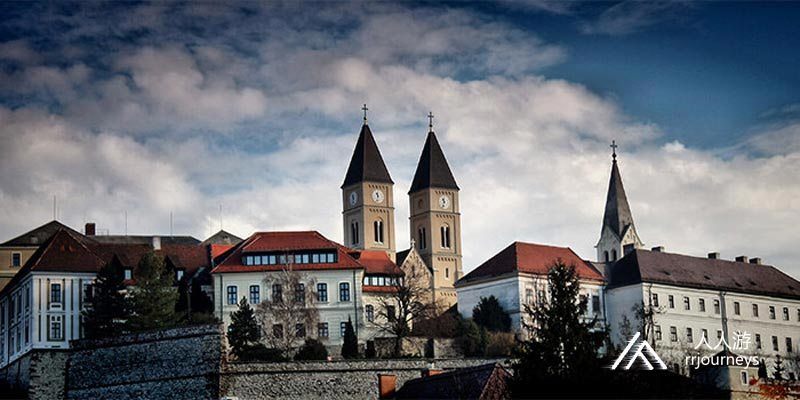
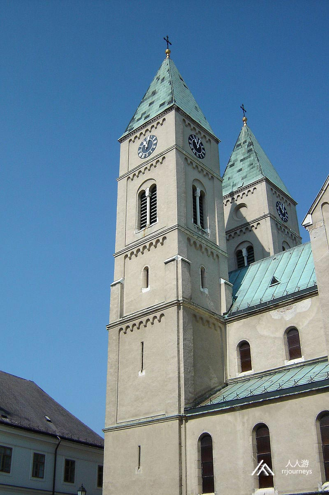
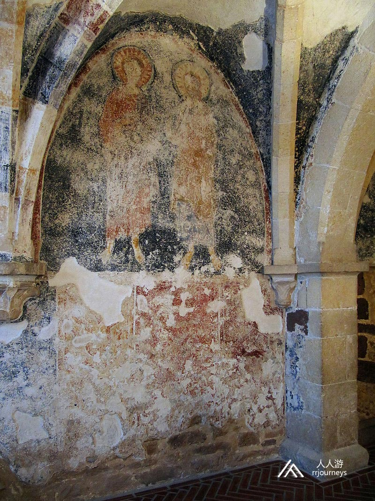
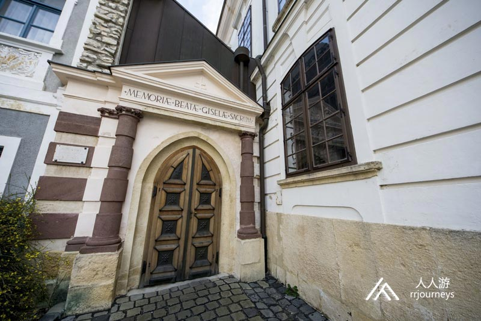
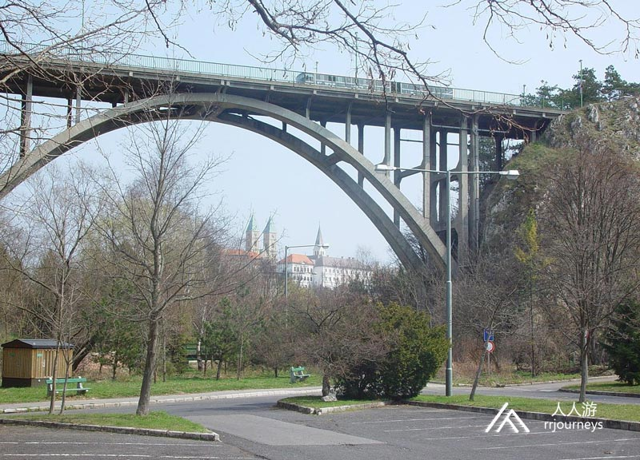
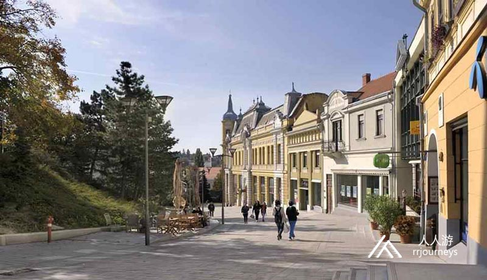
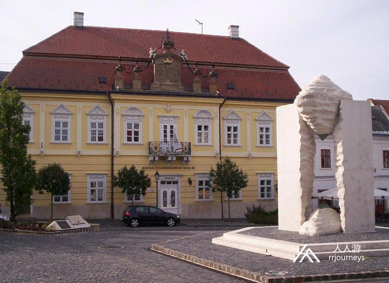
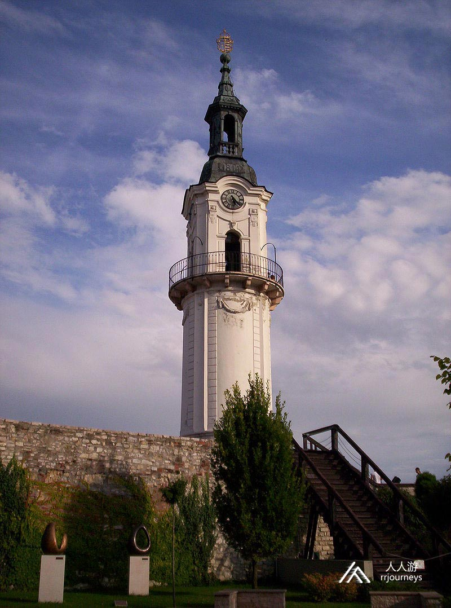
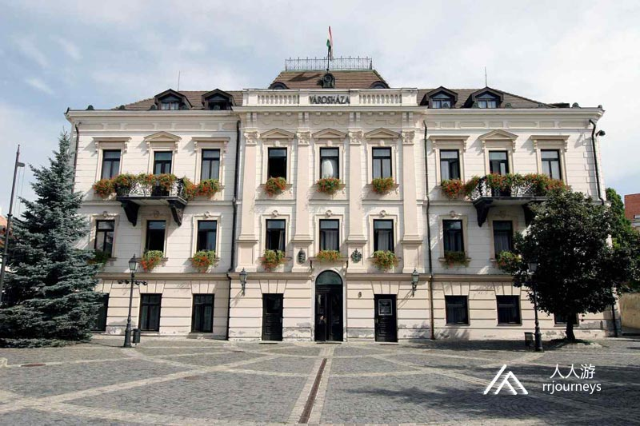

【美景】
维斯普雷姆是匈牙利最古老的城市之一，它是大学城、皇后城。 维斯普雷姆赢得了2023年欧洲文化之都的称号。
【美食】
Goulash牛肉炖汤
Libamáj 鹅肝
Lángos特色油饼
Toltott Kaposzta 圆白菜肉丸
Halászlé 鱼汤
Ujhazi Tyukhuslevesi 家常老鸡汤
Kurtoskalacs 烟囱卷面包
Egri Bikavér埃格尔公牛血葡萄酒
维斯普雷姆 维斯普雷姆是多瑙河中部地区的维斯普雷姆州政府所在地，大学城和皇后城。维斯普雷姆赢得了2023年欧洲文化之都的称号，欧洲文化之都是欧盟最重要的文化计划之一，旨在展示欧洲文化的多样性，以促进欧洲人民之间的相互了解。
早在公元前五千年，新石器时代时期，一个大的聚居区就坐落在称为新区的西部，维斯普雷姆城堡，埃斯泰尔戈姆城堡和塞克塞费希尔瓦城堡是最早的城堡。维斯普雷姆建在五个山丘上，但山谷中的定居点很可能早于山丘，人行道上的城堡墙线是维斯普雷姆城堡的特点。 景点：维斯普雷姆城堡 维斯普雷姆城堡周围是深谷和垂直的岩壁，它从周围区域伸出约40 m的岩石山脊上，城堡区上升，呈漫长的，不规则的形状，约为400 x 100 m，是风景如画的巴洛克和古典主义的风格。维斯普雷姆城堡的历史意义在于它代表的是中世纪的历史。在莫哈奇被击败之后，维斯普雷姆城堡的重要性再次提高，边界城堡的作用主要是它的军事意义。维斯普雷姆从一开始就在匈牙利的定居网络中扮演着重要的居留地的角色，并以盖萨亲王贝斯普里姆的孙子的名字命名，是该国最早建立的县和主教座席之一。该城堡分为两个阶段，首先是城堡山的北部三分之一处，是大教堂和主教宫殿的所在地，除了南部以外，四周都被陡峭的岩壁所包围。1640年代对城堡进行了增强其防御能力的修建，以至于土耳其军队不战而退。 19世纪下半叶，建立了许多巴洛克风格的民用建筑和宫殿，这些建筑和宫殿定义了当今的街景。  景点：维斯普雷姆大主教教堂 维斯普雷姆的大主教管区是一座罗马天主教的主教座堂，匈牙利的第一任主教来自这里。维斯普雷姆的主教为女王加冕，从祝福巴洛吉泽拉到齐塔女王。大主教管区的守护神是圣安妮，副守护神是巴洛吉泽拉。到14世纪初，这个地区的寺院数量超过一百个。该教区是匈牙利皇后区。在圣史蒂芬之前就已经成为萨罗特亲王王子的妻子之后的“皇后之城”。考古发现证明这里在1001年之前就已经有一座教堂。1991年，教宗若望保禄二世将这座新罗马风格的教堂升格为次级宗座圣殿。  景点：吉泽拉教堂 吉泽拉教堂是在维斯普雷姆最古老的建筑，曾经的两层小教堂位于城堡区，介于大主教的宫殿和大教区长的宫殿之间，它的13世纪壁画是匈牙利最古老的壁画; 它的拱形基石和装饰着龙像的章节也很独特。尽管它的原始守护神是未知的，但1938年在其大门上方刻有一个铭文：祝福吉泽拉奉献。 吉泽拉教堂是由圣史蒂芬的妻子吉泽拉皇后创立的，吉泽拉礼拜堂建于13世纪中叶，它的现名直到18世纪末才被使用。这座教堂是一座两层楼的宫殿教堂，北部与中世纪的宫殿相连，如今这座中世纪的宫殿已被完全摧毁。 该建筑具有早期哥特式建筑的标志。下教堂北壁上描绘使徒的壁画具有拜占庭元素。从上教堂开始，北墙幸存下来，上面有成捆的支撑拱顶的支撑物，拱顶和凯旋门柱上有11个小龙雕像。  土耳其战争结束后，礼拜堂落入当时的维斯普雷姆大教区。大祭司宫殿的建造者马尔顿泊丹尼比罗（后来的主教）大祭司和小祭司两座建筑之间打开了一个通道。 当时所有权争端非常严重，伊格纳斯科勒（1762年 - 1773年）委托詹姆斯·费尔纳建造新的主教宫殿（现为大主教宫殿），后者开始拆除吉泽拉教堂。重建了礼拜堂的较低楼层（不幸的是，除北部外，所有墙壁都被拆除，因此大部分壁画无法保存）富含巴洛克风格的元素。同时，还设计了圣三一广场的当前的入口。 1938年，在圣史蒂芬逝世900周年之际，修复了吉泽拉教堂的原始风格，拆除了巴洛克式元素，并向东方打开了一个狭长的窗户。新祭坛上题词“我们祖先的信念是未来的希望”。在艾伦克拉洛万斯克的指导下，于1980年至1983年间教堂进行了挖掘，发现了保存完好的残缺的使徒雕像壁画的碎片。在2000年至2001年间，修复了上层的石刻，发现了带有龙像的支撑捆，它们的外形十分精美。
 景点：圣史蒂芬谷大桥 圣斯蒂芬谷大桥在维斯普雷姆叫高架桥，拱桥桥梁，城市的象征。设计师是当时的著名结构工程师。自2006 年交接以来，它已成为8号国道的一部分。 在高架桥中间休息露台上可以欣赏到城堡区，塞德河谷以西以及遥远的巴科尼山脉的美丽全景。山谷大桥的象征性形象也出现在许多当地机构和企业的徽标中。1938年该高架桥被命名为圣斯蒂芬大桥。  景点：城市中心 维斯普雷姆的中心是城市的行政、交通、商业和文化中心，大多数维斯普雷姆的景点都在这里，它在整个历史过程中发生了几次变化，维斯普雷姆城市迁徙的历史是特定的。从中世纪时期到第二次世界大战，市中心在国家和城市的交通运输中起着非常重要的作用。1954年提出了第一个城市发展中心城市规划计划。1970年代上半年建的购物中心和高层建筑，为市中心的实际发展带来了非常重大的力度。  景点：老城广场 老城广场位于城堡山南端的一个小山丘上，政权更迭后，它才改名，以前称为红军广场，在此之前被称为拉科奇广场和市场广场，是该市最大的市场，一直经营到20世纪上半叶。该场地由市政厅提供，在1990年代进行了装修和扩建，但保留了折衷主义的风格。在广场的西侧，您可以看到建于1793年的巴洛克式房屋（现为银行大楼）。广场周围的其他建筑物大多建于19世纪下半叶和20世纪初。  景点：消防塔 这座城堡南端高48米的塔楼是中世纪的建筑，它的下部圆柱部分是建于13世纪的城堡塔楼的一部分，该建筑在土耳其时代幸存下来，从塔顶可以看到整个维斯普雷姆。这在多风的城市非常重要，可以在短时间内发现散发出的火焰，塔的最高峰是匈牙利的徽章。  景点：市政厅 市政厅毗邻城堡的老城广场，建于1857年，浪漫主义风格的建筑，当时它是教堂的银行。经过改建，面貌一新，二楼的阳台上装饰着优雅的锻铁栏杆，并用叶子装饰的金属控制台将它们固定在其中，檐口以及入口旁边是州和城市徽章，是总部办公楼的重要中心。
